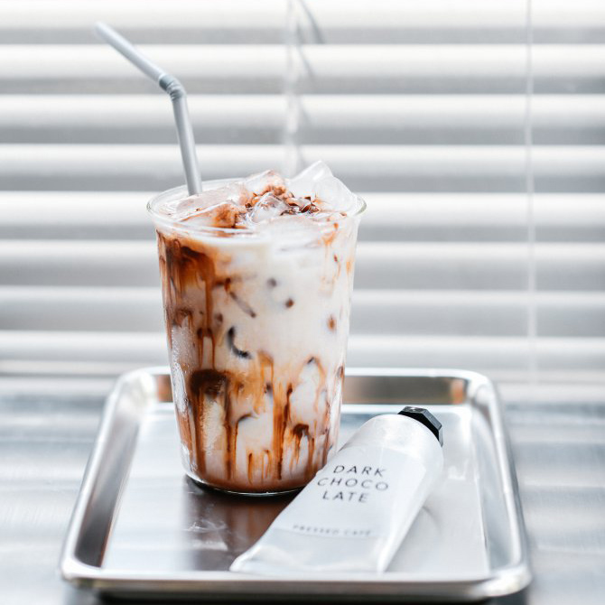

หน้าหลัก
ร้านอาหารไทย
ร้านอาหารจีน
เครื่องดื่ม/คาเฟ่
บาร์/ผับ
1. Grow tea.studio
สโลว์บาร์ที่เสิร์ฟชาคุณภาพดีที่ตีกันสดใหม่ในกาโบราณแบบแก้วต่อแก้ว ราคาเริ่มต้น 100-300 บาท
เปิดบริการวันอาทิตย์-ศุกร์ : 10.00น. -18.00น.
โทร 06-3218-3613
2. HALO Koffee
ร้านคาเฟ่แบบมินิมอล เหมือนยกคาเฟ่มาอยู่ในคอนเซ็ปต์มูจิ
เปิดบริการวันจันทร์-ศุกร์ : 07.30น.-19.00น. และเสาร์-อาทิตย์ 09.00น.-19.00น.
โทร 09-5881-3681
3. Mindscape Café by Bottomless
คาเฟ่เล็กๆ ติดกับคอนโด The Stage Mindscape บรรยากาศใหม่สไตล์โอเอซิสใจกลางเมือง ร่มรื่นพร้อมให้เรานั่งดื่มด่ำกับธรรมชาติ มีเมนูที่หลากหลายให้เลือกสรรรวมถึงรสชาติที่กลมกล่อม ราคา 100-250 บาท
เปิดบริการทุกวัน: 07.00น.-18.00น.
โทร 093-441-9924
4. Mitta X Sabaijai
โฮมคาเฟ่ที่บ่งพื้นที่ของตัวบ้านให้คนรักขนมและกาแฟได้แวะมาพักใจ เค้กโอมเมดของร้านเป้นที่รู้กันว่าห้ามพลาด เพราะมีรสชาติที่กลมกล่อม เนื้อนุ่มสุดๆ ราคา 110-135 บาท
เปิดบริการวันจันทร์-ศุกร์ 09.00น.-17.00น. และเสาร์-อาทิตย์ 09.00-18.00น.
โทร 098-874-9922
5. Poonypoonycoffee
ร้านกาแฟและอาหารฉบับออสเตรเลียในบ้านท้ายซอยย่านสุทธิสาร ที่อยากให้ความรู้ด้านกาแฟแบบถูกต้องกับนักดื่มทุกคนให้มีจิตวิญญาณในกลิ่นและรสชาติกาแฟ ราคา 100-300 บาท
เปิดบริการวันอาทิตย์-ศุกร์ : 10.00น.-17.00น.
โทร 092-799-8331
6. Sir.homecafe
ร้านคาเฟ่สไตล์ลอฟต์ ฉาบผนังปูนเปลือยเพิ่มความเท่ๆ คูลๆ บรรยากาศสบายๆ สุดโคซี่เหมือนอยู่บ้าน
เปิดบริการวันอังคาร-ศุกร์ : 08.00น.-17.00น และเสาร์-อาทิตย์ : 09.00น.-18.00น.
โทร 080-556-2619
7. Pressed café
คาเฟ่บรรยากาศสบายๆ เอาใจหนุ่มสาวชาวออฟฟิศเหมาะสำหรับผู้ที่ต้องการแวะมาเลือกเครื่องดื่มและของว่างเติมพลังในระหว่างวัน ด้านในตกแต่งโดยเน้นการใช้สีขาว เทา ดำ ให้ความรู้สึกคล้ายบรรยากาศในออฟฟิศ
เปิดบริการวันเสาร์-ศุกร์ : 08.00น.-18.00น.
โทร 096-834-8461